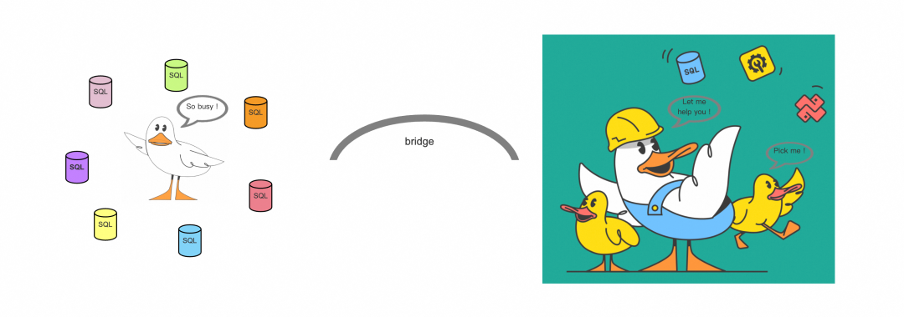
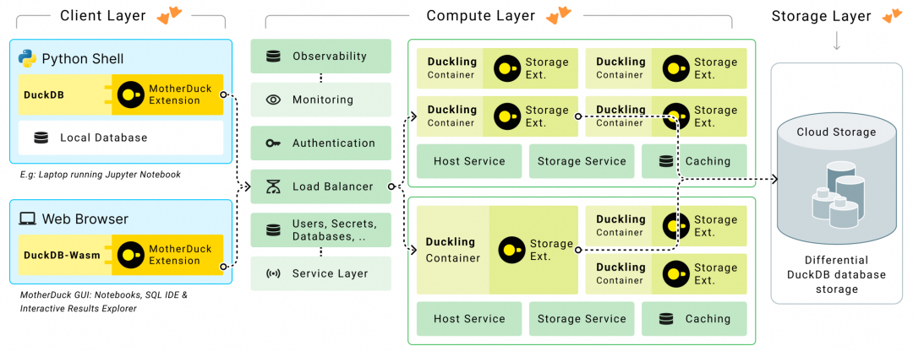
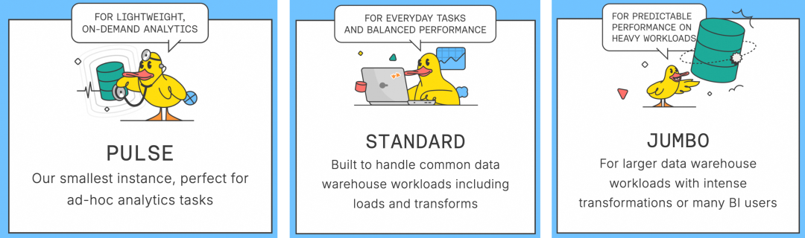

故事的开头
这是一只离家在外的小鸭，名叫小鸭C，工作日理万机，终于有一天，它受不了了，于是，向它家里的母亲发起求救：
"我太累了，每天都有干不完的活，可不可以分担一下我的工作"
"好的，我派个小弟帮帮你"
于是，母鸭让小鸭S去帮小鸭C，但是这两个孩子实在是相隔太远了，不能当面沟通，小鸭C的工作也无法直接交付给小鸭S，所以，两只小鸭之间需要搭建一个桥梁，能够高效地进行信息交互...

图1：母鸭 vs 小鸭
接下来，主要围绕论文《MotherDuck: DuckDB in the cloud and in the client》介绍一下MotherDuck :)
MotherDuck 就像母鸭和家里的一群小鸭（例如，小鸭S），而离家在外的小鸭C就像是运行在 laptop 或者其它 local machine 上的 DuckDB。
MotherDuck的故事
MotherDuck 是云原生 DuckDB 数据库服务，提供 DuckDB 数据存储和查询处理服务。而 DuckDB 是一个嵌入式分析系统，可以嵌入在发送 SQL 查询的 client 进程中，在 client 使用的 driver 或 API library 中运行，所以，所有使用 DuckDB 的 client 都有一个 local DuckDB，但有了 MotherDuck，query 也可以使用cloud DuckDB。
设计理念
DuckDB 作为嵌入式分析型数据库，其核心优势在于低延迟的本地分析能力，在2023年的云数据库分析报告中表示，超过 95% 的数据库大小小于1TB，超过 95% 的 query 查询小于 10GB 的数据。在"Big Data is Dead"的口号下，MotherDuck 的云原生架构依旧避免横向扩展。多节点任务调度不可避免地会引入额外的通信开销，增加端到端的查询延迟：查询必须通过节点之间的网络对数据进行 shuffle，从而增加网络和序列化/反序列化的 CPU 成本。
但是，面临本地存储扩展性不足和大规模数据处理的性能瓶颈（例如，处理PB级数据时，本地硬件资源可能成为性能瓶颈），单节点的 DuckDB 必须要解决扩展性的问题。而 MotherDuck，即通过云基础设施弥补这一短板：MotherDuck 基于 DuckDB 的开源生态，既保留了本地部署的灵活性，又通过云资源扩展了计算边界。也就是说，用户在本地 DuckDB 的基础上，可利用云端 DuckDB（支持scale-up/scale-down）来处理任务负载。
MotherDuck 核心功能
支持 hybrid query processing（混合查询处理）
- 如果全部数据在 local，则 DuckDB 只在 local 处理 query
- 如果全部数据在 cloud，则 DuckDB 在 cloud 处理查询
- 如果一部分数据在 local，一部分在 cloud，那么 query 的一部分将在 local 执行，一部分在 cloud 执行，local 和 cloud 之间通过 bridge 算子进行交互，负责上传和下载数据
- 在一个 query 中，同时查 local DuckDB 和 cloud DuckDB 的数据，由 MotherDuck 优化器决定在哪里执行query
- 现有 DuckDB 用户无需修改 query，即可无缝接入 cloud service
协作与资源共享
可以与其他用户共享 cloud DuckDB，更好地进行协作。用户通过 MotherDuck SHARE 命令，可以指定 cloud 中哪些数据库是可以与其它用户分享的，类似地，通过 ATTACH 命令，以只读方式访问其他用户在云端的数据库。
架构设计
MotherDuck 采用计算存储分离的架构，由 client、compute、storage layers 组成。

图2：MotherDuck 架构
Client Layer
即本地机器上的 DuckDB，通过 MotherDuck extension，连接到 cloud。
Compute Layer（计算层）
- 按需分配容器（container），每个容器内有一个 DuckDB 实例（duckling），为单个用户服务
- duckling 是无状态的，仅在查询执行期间存在，不用时则停止运行，避免资源限制
- 容器所在的机器上如果有local SSD，那么 MotherDuck 会用来做本地缓存，提高查询性能
- scale-up/scale-down：MotherDuck 提供3种不同规格的 duckling：PULSE、STANDARD、JUMBO
- scale-out：MotherDuck 针对读场景，可借助多个只读副本，提高读并发

图3：MotherDuck Duckling
Storage Layer（存储层）
对象存储，例如 AWS S3。
- 差异存储（differential storage）：因为像 S3 这样的服务不能修改文件，所以，数据修改是通过写入（多个）新文件，或者删除文件来完成的，duckling storage extension 支持差异存储，其中修改的数据作为 mutation tree 来单独存储；在此基础上，实现了零拷贝复制（zero-copy duplication）、共享（sharing）、分支（branching）和时间旅行（time travel）
- 支持 multi-database storage，即 DuckDB 可以同时以只读或读写模式 ATTACH 到多个数据库文件
Hybrid Query Processing（HQP）
处理一个 DuckDB query 会经历四个阶段：parsing（解析）、binding（绑定）、query optimization（查询优化）和 execution（执行）。
Parsing 阶段
在 client 端进行，解析用户输入的SQL查询语法，识别并处理 MotherDuck 的扩展语法。通过 MD_RUN = REMOTE（或者 = LOCAL）来指定在 duckling 还是 client 上进行 table scan。
Binding 阶段
在 client 端进行，通过 virtual catalog（虚拟目录），维护一个全局元数据视图，包含 local 和 cloud 中的数据库信息，保证在 binding 和生成执行计划的过程中能够获得表的schema和统计信息。
Query Optimization 阶段
在 client 端进行，优化器将查询拆分为多个逻辑片段（fragments），并根据以下原则分配执行位置：
- 数据本地性：优先在数据存储位置（本地或云）执行计算，减少数据传输
- 传输成本：评估数据移动的开销，若本地计算成本高于传输数据到云的开销
Execution 阶段
在 client 和 cloud 端进行，MotherDuck 引入 bridge 算子，来负责 client 和 duckling 之间的数据上传和下载。在混合查询计划中，client 和 duckling 是生产者-消费者的关系，如果生产者运行得比消费者快，那么中间数据量就会累积，导致效率低下、甚至资源耗尽或故障。对此，MotherDuck 采取流控的机制，将生产者暂停一段时间，直到消费者消耗了足够的数据，然后再让生产者继续工作。
小结
总的来说，MotherDuck 通过云服务，拓展了 local DuckDB 的处理能力，处理一个 query，可以同时使用两个节点，client 和 duckling。
故事的最后
某一天，小鸭C对小鸭S说："如果我们都干累了，怎么办？"
刚说完，小鸭C和小鸭S不禁倒抽一口凉气...
参考
- https://motherduck.com/
- https://motherduck.com/blog/big-data-is-dead/
- 《MotherDuck: DuckDB in the cloud and in the client》CIDR 2024
- 《Cloud Analytics Benchmark》PVLDB 2023